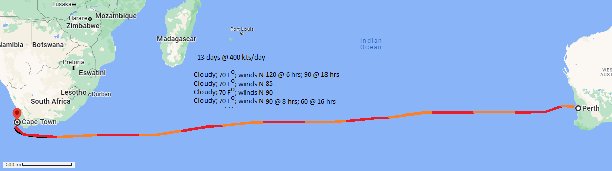

Geography!
Plan a sea route for cargo between the two countries. To do this consider the following:
- Draw a draft route between the two ports.
- Divide it into segments 400 mile segments (one per day).
- Consider the weather forcast for the route over each day.
- Write out the course as a daily set of
